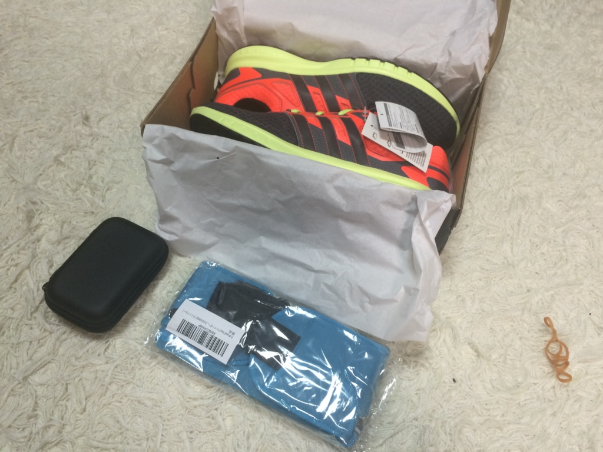

物欲駆動でランニングを始める。
公開日：
この前、見奈良の温泉に入った時のこと。
このお風呂、リーズナブルな割にめっちゃ広くて、露天風呂入ったり、ベンチで寝っ転がって昼寝したり、壺湯に入ってみたり、歩き湯でウォーキングしてみたり……まぁ、いろいろ楽しかったんだけど――
お風呂から出て体重計に乗ったら、78kg もあった／(^o^)＼
まえに計ったときは 75kg だったんだが……この短期間でなにがあった、マイボディ。
正直なところ、太ることに関しては割とどうでもいいと思っている。見た目なんかにこだわってもしゃあないしな。M サイズを L サイズに買い替えるのはちょっと面倒だが、まぁ、それも割と我慢できる。でも、このままだと生涯でビールを飲める本数が減ってしまいそう。これだけは勘弁してほしい。我唯恐之耳。
というわけで、一念発起して運動を始めることにした。
しかし、自分は正直運動が好きじゃない。運動してると、本も読めないし、Twitter することもできない。その意味ではウンコしてる時間の方が、よっぽど有意義に思える。いっそのことウンコするのにめっちゃカロリー消費できたらええんやけどなぁ……。サッカーみたいなゲームとしてのスポーツは割と好きなんだけど、そんな体育会系の友達いないしな。
要するに、ただ一人で黙々とやるのが苦手なんだよ。敵に勝つためとか、うまくなったらお金もらえるとか、そういうのがあったら頑張れる気がする。やればできる子って昔からよく言われてたし。
で、いろいろ考えたんだが……。
最近はいろいろな健康ガジェットが売っている。運動しないくせにそういうのが最近ほしくなってるんだが……頑張ったらそういうのを買ってもいいことにする。ガジェットを買えば、とりあえず何週間かはそれを試したくなるだろう。そしてまたそれに飽きたころに、新しいガジェットを買う。
――物欲駆動＜グリード・ドリブン＞。
これだったらいけそうな気がする！ 年内、飽きずに運動を頑張れたら、ヘルスバンド的なものを買うことにしよう。だんだんやる気が沸いてきた。タンスから短パンと速乾のスポーツシャツを取り出す。うちの家にはジョギングだのランニングだのに関係がありそうなグッズはそれしかなかったので、Amazon でいくつか買い足さなければならない。

![[アディダス] ランニングシューズ Galaxy 2 B33657 B33657 (ｿｰﾗｰﾚｯﾄﾞ/ｺｱﾌﾞﾗｯｸ/ﾐｯﾄﾞｸﾞﾚｰ S14/27.0)](https://images-fe.ssl-images-amazon.com/images/I/41uq58XILpL._SL160_.jpg "[アディダス] ランニングシューズ Galaxy 2 B33657 B33657 (ｿｰﾗｰﾚｯﾄﾞ/ｺｱﾌﾞﾗｯｸ/ﾐｯﾄﾞｸﾞﾚｰ S14/27.0)")
[アディダス] ランニングシューズ Galaxy 2 B33657 B33657 (ｿｰﾗｰﾚｯﾄﾞ/ｺｱﾌﾞﾗｯｸ/ﾐｯﾄﾞｸﾞﾚｰ S14/27.0)
- 出版社/メーカー: adidas
- メディア: Shoes
- この商品を含むブログを見る
とりあえず靴。どんなのがいいのかさっぱりわからんので、とりあえずクーポンで割引になってるやつを買った。レビューを読んでワンサイズデカいのを選んだ（26.5 → 27.0）らちょうどよかったかも。
")
次に、音楽聞くやつ。線が邪魔にならない Bluetooth 対応のがいい。これも何がいいのかよくわらんかったが、とりあえずは安い中華製でいいかな？ 一応「日本語取扱い説明書付き」というのを選んだのだけど、日本語の説明書が入ってなくて笑った。ちゃんと動いてるし、英語の説明書（裏は中国語）がついていたから問題ないけど。耳からポロポロとれちゃうのは、耳栓みたいなやつの大きさがあってないからかな？ つけ方がおかしいだけかもしれないので、もうちょっと様子見して、ダメだったら小さいヤツを買ってこようかと思う。

最後にポーチ。あんまり格好良くはないが、無難そうなのを買ってみた。いつも使ってる長財布は入らないが、いよてつカードとクレカを1枚を入れている名刺入れとスマフォは入る。走る途中でしんどくなっても、いよてつの IC カードがあればちんちん電車で帰ってこれるだろう。財布はない方がむしろいかもしれない。帰りにフラッと居酒屋に寄ってしまっては元も子もない。
走ってきた！
ロシア兵墓地まで往復してきた。墓地にお墓参りしているおばちゃんがいて、ちょっとホッコリ。
このルートは距離こそ短いけれど、割とアップダウンのある道なのでヘヴィ。夕暮れ時で薄暗かったが、このルートだったらクルマの多い場所も広い専用歩道を走れるし、大丈夫だと思う。健康のために外に出て、轢かれて死んでたんじゃよろしくない。
家に帰って、ご褒美＆無事帰還したことを祝い缶ビールを4本あけた。
――次の日。
下半身が筋肉痛。走れないので、代わりに腕立て伏せを15回頑張った。今日もご褒美でビール飲もうかと思う。